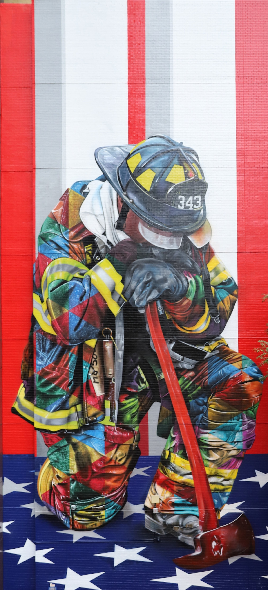
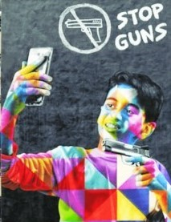
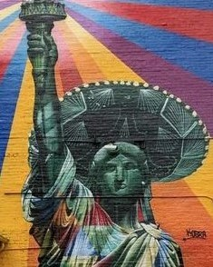

Eduardo Kobra
Brazilian artist

He hopes his artwork inspires people to make positive changes in the world.
Kobra's Colors of Freedom series in New York
-

-
The braves of 9/11
Mural in honor of the FDNY firefighters who fought and lost their lives during the September 11, 2001 attacks.
Find here:780 Third Avenue, New York
-
Fight for Street Art
This work is a tribute to 2 artists, Andy Warhol and Jean-Michel Basquiat, plus Michael Halsband who took the pictures of the first two!.
Find here: 147 Bedford Avenue, Brooklyn
-
Ziggy Stardust
10 months after David Bowie passing, Kobra painted Ziggy Stardust, the famous fictional character created by the singer in the 70’s.
Find here:837 Jersey Avenue, Jersey City, NJ
- Black or White
In this magnificent mural you can see Michael Jackson as a child and adult. It’s in the East Village.
Find here:400 E 11th Street, New York

-
Stop Guns
This work calls attention to mass shooting at schools.
Find here:231 Eldridge Street, New York
-
PEACE
In Midtown, this work represents the famous American pop artist Roy Lichtenstein.
Find here:225 E 44th Street, New York
-
Frida & Diego
In between two buildings in Brooklyn, Frida Kahlo and Diego Rivera are one person
Find here:360 Prospect Place, Brooklyn
-
Christ
This is the representation of the Statue of Christ looking over Rio de Janeiro.
Find here: 833 Dekalb Avenue, Brooklyn
-
Tolerance
Right next to the High Line, Kobra portrayed Gandhi and Mother Teresa, two figures of tolerance.
Find here:130 10th Ave, New York
-
Genius is to bike ride
Kobra is a fan of Albert Einstein. He already did a similar work in Sao Paulo, now another is on the streets of New York. The genie is on a bike with a sign indicating that peace equals squared love.
Find here:780 Third Avenue, New York
-
War is hell
In this work, Elvis who appears as a military man with a helmet indicating that “war is hell”.
Find here:219 Bedford Avenue, Brooklyn
-
We Love NY2
In this mural he paints Albert Einstein who paints his love for New York (squared of course). Who is the genius now?
Find here:298-200 W 21st St, New York

-
Colors of Liberty
he Statue of Liberty according to Kobra, must have many colors.
Find here:49 Thompson Street, New York
-
The 27 Club
The club of the 27 are these artists who died too young, at 27 years old. You will recognize Janis Joplin, Kurt Cobain, Jim Morrison, Jimmy Hendrix y Amy Winehouse.
Find here:46 Rivington Street, New York
-
Stop Wars
Kobra denounces war with this mural representing C-3PO of Star Wars, with a sign at hand saying Stop Wars.
Find here:391 Christopher Street, New York


“I made in total 18 murals around the city, and their goal is an urge for peace for all kinds of social justice, against racism, against violence. It was a period of 5 months, filled with challenges, but I leave with a feeling of accomplishment, having achieved something I have dreamed of, painting around New York, a city that is key to the history of street art. Thank you, NY.”
--Eduardo Kobra